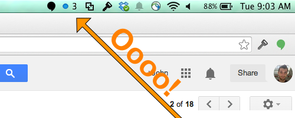

A Github Notifications app for Mac OS
If you're like me, you might go check Github a few times a day to look at that little notifications bubble and see if the world has anything new you need to be made aware of.
I got tired of looking, and made Github Notifier to solve that problem. It's a Mac OS app that adds a Github notifications dot into your tray. Like this:

And you can download and use it today with the links to the left!